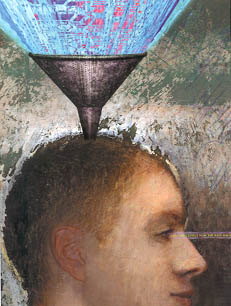

Making Sense of What We Know |
||||
|
With the telecommunications revolution literally flooding the scientific world in new information, the challenge is not so much gathering more data, but sorting through the mountains of what we've learned. By Gary Taubes |
||||
|

There's been the Stone, the Iron, the Nuclear and, now, the Information Age. Ironically, this spoch at last dominated by Homo Sapien's most prized evolutionary possession may prove to be, if not the most risky, the most challenging. The catalyst for the age, of course, is modern technology -- not just computers and the Internet, but telecommunications, satellites and biotechnology breakthroughs, plus the ability to catalog just about everything and put it into a digital form that can be transmitted, stored, and theoretically, used by researchers, policy-makers and anyone else who needs information to make decisions. And the faster the computers, the broader the band of communication channels, the cheaper the storage mediums, the more information we will have. |
But a worrisome question has raised its dark head: Will it be too much? Is there too much data? The overload will be ubiquitous: from the world of electronic commerce and science (the next generation of earth-observing satellites alone will beam scientific data back home at a rate of trillions of bytes a day) to the home desktop, where individuals will, at the click of a mouse, have access to an ever-growing increment of the totality of human knowledge. Furthurmore, new knowledge will generate new technology, which will generate yet more knowledge at an ever-faster rate. And so it will go. The result already is an "avalanche of information," notes David Eisenberg, director of the UCLA Department of Energy Laboratory of Structural Biology and Molecular Medicine. But While the data revolution represents an unprecedented opportunity for researchers, it also represents an unprecedented challenge. "The obvious question is, 'What do you do with it all?'" says Dick Muntz, chair of UCLA's computer science department. "The problem in all these disciplines is how you extract useful information from this growing body of data." The search for an answer is already under way. UCLA researchers are at the forefront of explorations in nearly every discipline ot provide systems, technologies and algorithms to organize and make use of information, sifting through it for the knowledge hidden within, looking for a way to display it in a form that mere mortals can use. And where crucial information is still missing, UCLA researchers are even studying how to use existing information to fill the gaps. |
"Where's
the --T.S. Eliot, The Rock
|
||